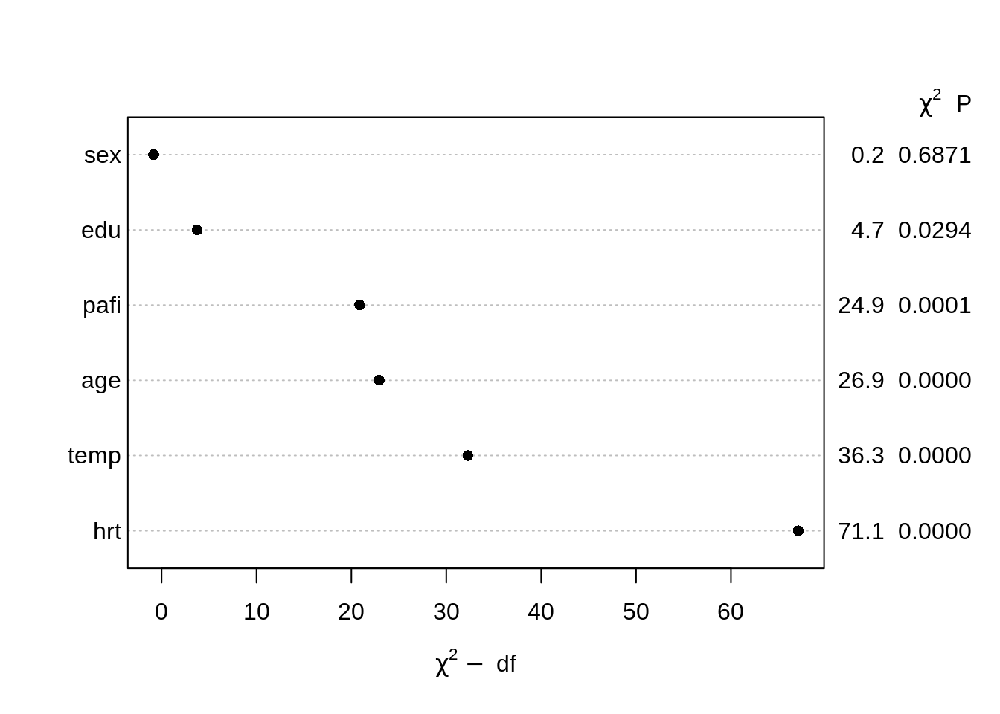
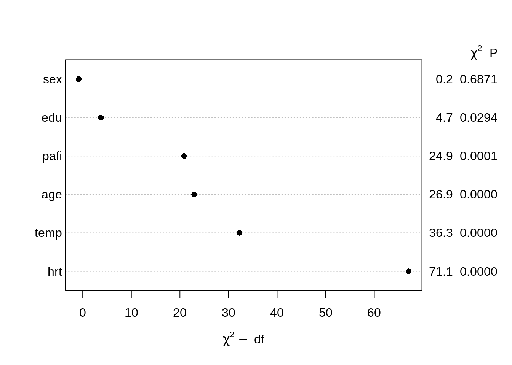

library('rms')
getHdata(support2)
f <- lrm(hospdead ~ rcs(age,5) + rcs(temp, 5) + rcs(hrt, 5) + rcs(pafi, 5) + edu + sex, data = support2)
plot(anova(f))
A New Year’s resolution for all of our models: get more flexible!
As an aside, I’m better at implementing yoga for my models than yoga for myself, most of the time I end up like this:

Anyways, let’s make our models flexible! By flexible, we mean let’s be more intentional about fitting nonlinear parametric models.
##What do you mean by nonlinear modeling
By nonlinear modeling, we mean fitting parametric models with nonlinear terms. In particular, Professor Harrell suggests restricted cubic splines (more on this below). So by this definition, you could be fitting a “linear” model (as on ordinary least squares), with nonlinear terms. We brought up in class that this can cause some confusion, and setting on calling it “Gaussian regression” So you heard it here first, folks, from now on, refer to your ordinary least squares models as “Gaussian”.
Update: Professor Harrell proofed this and suggested
“what about just calling it OLS?”, so nevermind on
Gaussian, it had a good run…
I spent a really long time trying to think up a whitty pun/slogan for this name change, alas, all you get is this:

If you have a particulary clever slogan, send it to me.
Update 2: Actually! We’re putting it to a vote.
Gaussian may have another chance.
Will update in a further post.
To do this nonlinear modeling, restricted cubic splines are suggested because
they allow for flexibility without costing too many degrees of freedom (it only costs \(k-1\) degrees of freedom, here \(k\) is the total number of knots) for comparison, unrestricted cubic splines require \(k+3\) parameters to be estimated
they force linearity in the tails (that is before the first knot and after the last knot) this is good because cubic spline functions can have weird behavior in the tails
regression coeffcients can be estimated using standard techniques
there are easy functions in R to do it Harrell’s rms package makes restricted cubic spines very easy to implement. Simply wrap your predictor in the rcs() function within your model statement. For example, if I were to fit a Gaussian model (see what I did there 😉), I would run the following code to fit x flexibly with 4 knots:
library('rms')
k <- 4
ols(y~rcs(x, k))##Why should I care about nonlinear modeling
Fitting flexible models is an excellent way to avoid having to test a whole bunch of assumptions that are hard to prove/disprove! Additionally, once you’ve fit a model, changing it based on “model checking” procedures has the danger of inflating your type 1 error 😱. We discuss an excellent paper by Grambsch and O’Brien demonstrating that testing for nonlinear effects & then proceeding to drop from from the model if the test is not significant has real implications for the type 1 error. Might as well just model everything flexibly from the get-go! But what about my degrees of freedom? ah yes, the next section is just for you!
##What if I don’t have enough degrees of freedom for nonlinear modeling
In predictive modeling, we are always concerned with overfitting, or creating models that describe the population we’ve sampled very well, but are not generalizable. In the extreme case, you can imagine if you fit a model with 50 participants and included 50 covariates, one for each participant, you could perfectly predict any outcome (but that would be a pretty silly model). In order to avoid overfitting disasters, there are useful rules of thumb we try to follow. In general, we try to fit models that have around \(m/15\) covariates, where \(m\) varies depending on the type of model in the following manner (for those following along, this is on page 74 of Regression Modeling Strategies).
| Response | m |
|---|---|
| continuous | the total sample size |
| binary | # of events |
| survival | # of failures |
Now that we’ve convinced you that degrees of freedom matter, I’m sure you’re thinking “but nonlinear terms add degrees of freedom!” True. Restricted cubic splines are a bit less aggressive that regular cubic splines in terms of degrees of freedom usage, but even still sometimes that is not enough. In those cases, we need to determine how to best utilize our degrees of freedom. Professor Harrell recommends the following (page 67 of RMS):
VERY IMPORTANT: Make certain that tests of nonlinearity are not revealed as this would bias the analyst.
Here is a little snippet of R code to do just that in a logistic regression case. We are using the support2 dataset as an example.
library('rms')
getHdata(support2)
f <- lrm(hospdead ~ rcs(age,5) + rcs(temp, 5) + rcs(hrt, 5) + rcs(pafi, 5) + edu + sex, data = support2)
plot(anova(f))
And there you have it.
 meme cred: Nick Strayer
meme cred: Nick Strayer